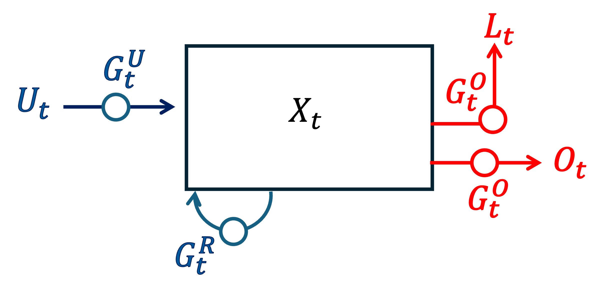
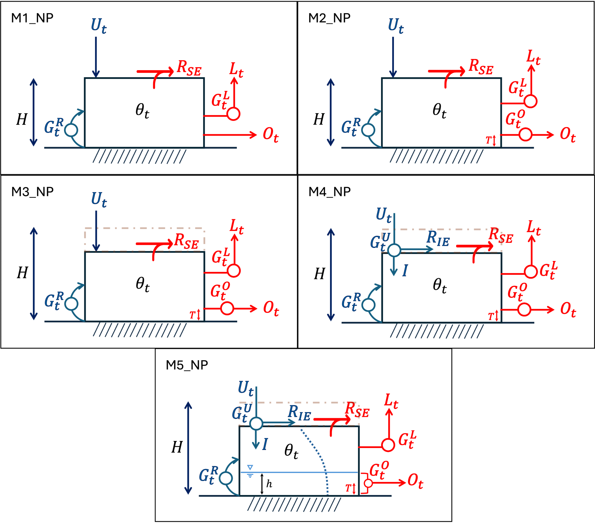
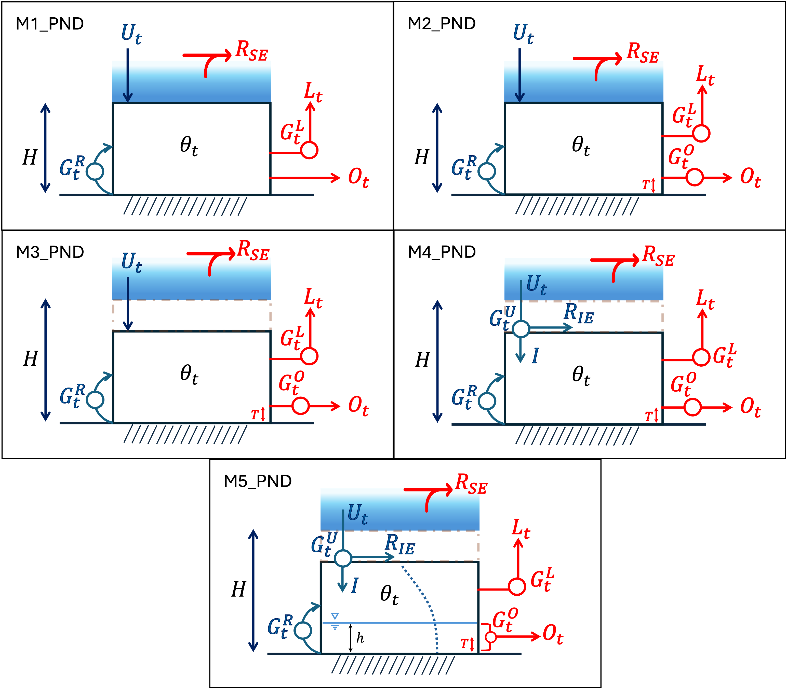
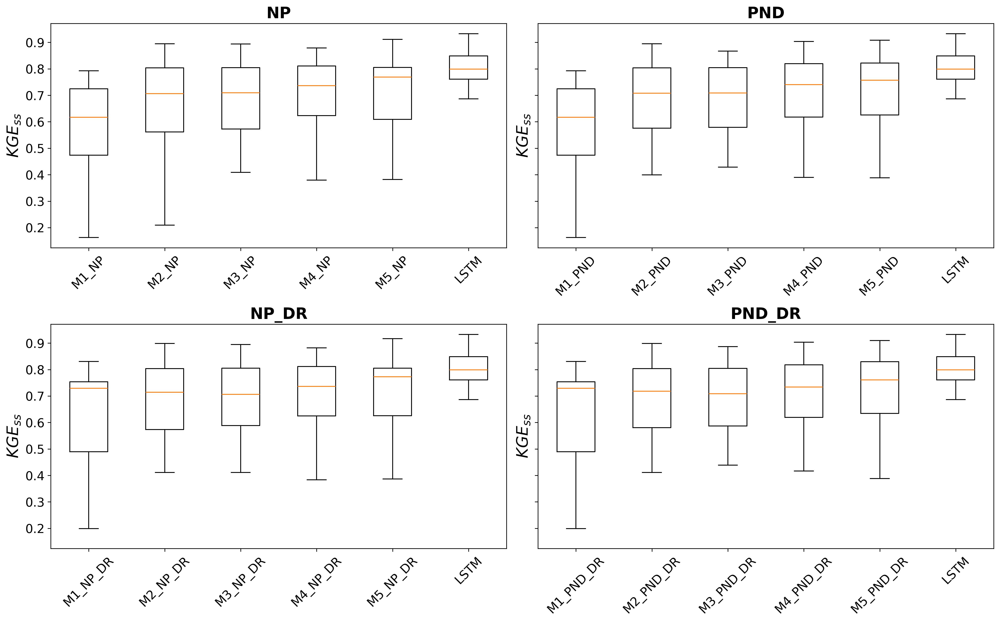
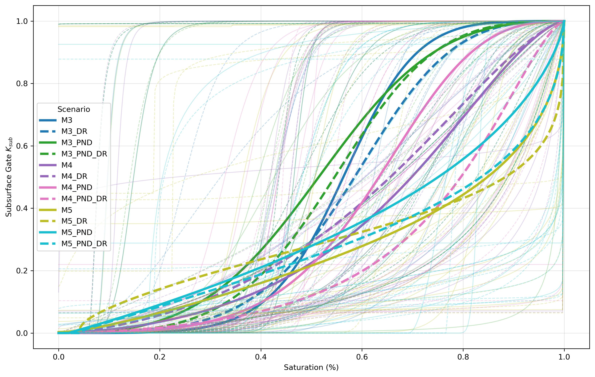

Process-Aware AI for Rainfall-Runoff Modeling
This page summarizes a new paper on a mass-conserving neural framework for rainfall-runoff modeling. The work progressively embeds hydrologically meaningful process representations within a Mass-Conserving Perceptron (MCP), with the goal of improving both predictive skill and physical interpretability.
The core idea is simple but powerful: instead of treating rainfall-runoff prediction as a pure black-box mapping, the model constrains internal storage and flux behavior using physically meaningful process relationships such as bounded storage, infiltration limits, surface ponding, vertical drainage, and nonlinear water-table dynamics.
The scientific question behind the page is not only whether performance improves, but how much hydrologic process structure should be embedded inside a mass-conserving AI model before added realism stops helping. That makes this study both a forecasting paper and a model-structure paper.
Motivation
Standard machine learning models can perform well in hydrology, but they often lack interpretability. Traditional physical models are easier to understand, but they can struggle to represent flexible nonlinear relationships across diverse catchments. This work aims to bridge that gap.
By embedding process constraints into a mass-conserving architecture, the model preserves explicit storage-flux structure while still learning from data. That makes it possible to ask not only whether predictions improve, but also which physical assumptions matter most under different hydroclimatic regimes.
This is the real strength of the MCP framework. Instead of imposing physics only through soft penalties or external regularization, conservation and storage-flux partitioning are built directly into the computational unit. That gives the hidden states a physical meaning and makes the architecture useful for hypothesis testing.
MCP Framework
The study starts from a minimal MCP storage unit and progressively augments it with additional physical structure. The hierarchy includes bounded soil storage, state-dependent conductivity, variable porosity, infiltration capacity, surface ponding, vertical drainage, and nonlinear water-table dynamics.
This staged design makes the model especially useful as a process-learning tool. Instead of comparing entirely different model families, the paper shows how predictive skill changes as specific process mechanisms are introduced one by one inside the same mass-conserving AI framework.
In the MCP, the internal state acts as a storage variable and outgoing fluxes are explicitly partitioned into interpretable components such as discharge and evapotranspiration. Because conservation is embedded directly in the architecture, the model remains differentiable like a neural network while behaving structurally like a hydrologic storage-flux system.

Progressive Process Hierarchy
The paper develops a hierarchy of five progressively augmented models, labeled M1 through M5. Each step adds one new hydrological mechanism while preserving the processes already introduced in earlier versions. This makes it possible to identify which structural additions actually improve streamflow prediction and which ones mainly add complexity.
The progression begins with a bounded soil bucket representation, then introduces state-dependent conductivity, variable porosity, infiltration capacity with infiltration-excess runoff, and finally nonlinear water-table dynamics. Together, these models span a continuum from a simple conceptual bucket to a more physically structured soil-storage representation.
Because the internal architecture changes gradually rather than all at once, the study can attribute performance differences to specific process representations rather than vague differences between unrelated model classes.

Boundary Conditions: Ponding and Drainage
Beyond internal soil-process structure, the paper also explores how boundary conditions affect model behavior. Surface ponding introduces temporary storage above the soil column and delays infiltration, while vertical drainage adds a lower-boundary loss pathway that represents deep percolation below the modeled soil layer.
These boundary-condition scenarios are combined with the five internal soil-process models to create a structured experimental space. The paper considers no-ponding/no-drainage, ponding only, drainage only, and combined ponding-plus-drainage cases. This is an especially elegant part of the study because it separates internal process realism from boundary-condition realism.
In total, the framework evaluates 20 model configurations, which makes the page a useful place to explain not just one model but a family of process-aware MCP designs.

Evaluation Design
The models are evaluated across 15 catchments spanning five major hydroclimatic regimes in the continental United States, including arid, snow-dominated, and rainfall-dominated systems. Daily streamflow prediction is the main target, and performance is compared against an LSTM benchmark trained on the same meteorological inputs.
This broad evaluation is important because the paper is not arguing that one process-rich architecture wins everywhere. Instead, it shows that the value of additional process realism depends on hydroclimate and that interpretable AI can help reveal where different mechanisms matter.
Hydroclimate-Dependent Behavior
One of the most important findings is that the effect of process constraints depends strongly on hydroclimate. Vertical drainage substantially improves prediction skill in arid and snow-dominated basins, but can reduce skill in rainfall-dominated regions. Surface ponding appears to have a smaller overall effect by comparison.
This result matters because it shows that physical realism is not a one-size-fits-all concept. Different basins respond to different structural assumptions, and process-aware AI can help reveal those differences in a transparent way.
In other words, the paper argues for conditional realism rather than universal realism. The right structure depends on the dominant water-balance behavior of the basin, and a process-aware model can expose those dependencies more clearly than a pure black-box benchmark.
Key Findings
1. Embedding hydrological process constraints improves interpretability while preserving strong predictive performance.
2. Process-aware MCP variants can approach the predictive skill of an LSTM benchmark while retaining physically meaningful internal states and fluxes.
3. Progressive augmentation of the MCP unit generally improves performance, showing that carefully chosen process realism can help rather than hinder learning.
4. Vertical drainage is especially important in arid and snow-dominated basins, but can reduce skill in rainfall-dominated systems.
5. Surface ponding has comparatively smaller overall effects than vertical drainage.
6. The framework provides an interpretable way to study storage-flux dynamics and structural process hypotheses across hydroclimatic regimes.


Implications
The paper’s broader contribution is that it reframes interpretable AI in hydrology as a structural design problem. Rather than asking whether machine learning should or should not be physical, it asks how physical knowledge should be embedded and how much of it is useful.
That makes the MCP framework promising for future hybrid hydrologic modeling, differentiable process development, and basin comparison studies. It also provides a path toward models that are scientifically informative, not just accurate.